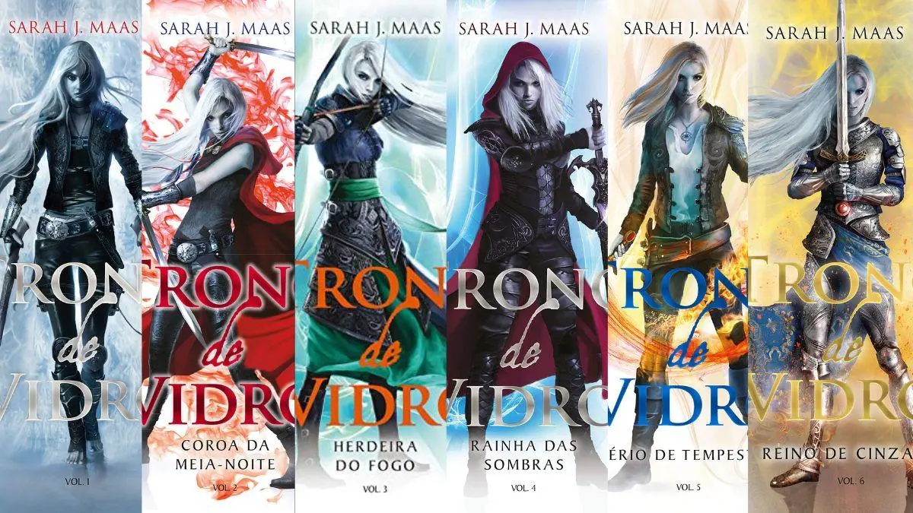

Bem-vindo ao Blog
Este blog apresenta resumos, sinopses e impressões pessoais sobre os livros da saga Trono de Vidro. Aqui você vai encontrar conteúdos detalhados sobre cada livro que já li, acompanhados de imagens e links para páginas específicas com informações completas.
